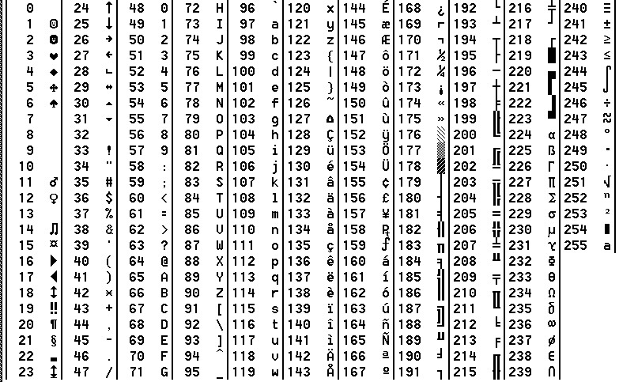

Un caractère est une variable de type Char qui prend 1 octet (= 8 bits) en mémoire. La table ASCII est un tableau de 256 caractères, numérotés de 0 à 255, où les 23 premiers sont des caractères de contrôle, associés à des fonctions de base de MS-DOS (Suppr, End, Inser, Enter, Esc, Tab, Shift...) et tous les autres sont directement affichables (lettres, ponctuations, symboles, caractères graphiques).
Dans un programme en Pascal, on peut travailler sur un caractère à partir de son numéro dans la table ASCII (avec la fonction Chr(n) ou #n) ou directement avec sa représentation entre apostrophes ''.
Exemples :
Espace := ' '; Lettre := #80; Carac := Chr(102);
Table ASCII :
Var Lettre : Char;
Lorsqu'on donne une valeur à une variable de type Char, celle-ci doit être entre apostrophes. On peut aussi utiliser les fonctions Chr et Ord ou même une variable String (voir plus loin) dont on prend un caractère à une position déterminée.
Lettre := Chaine[Position];
Voyons à présent quelques fonctions :
Upcase (k);
Cette fonction convertit un caractère minuscule en MAJUSCULE.
for i := 1 to Lenght(s) do s[i] := Upcase(s[i]);
Chr (n);
Cette fonction renvoie le caractère d'indice n dans la table ASCII.
k := Chr(64);
Ord (k);
Cette fonction renvoie l'indice (en byte) correspondant au caractère k dans la table ASCII. C'est la fonction réciproque de Chr.
i := Ord('M');
Le type String définit des variables "chaînes de caractères" ayant au maximum 255 signes, ces derniers appartenant à la table ASCII. On peut cependant définir des chaînes dont la longueur maximale sera moindre (de 1 à 255). Le premier caractère de la chaîne a pour indice 1, le dernier a pour indice 255 (ou moins si spécifié lors de la déclaration).
Var Chaine : String; Telephone : String[10]; { Chaîne d'une longueur maximale de 10 caractères }
Lorsqu'une valeur est affectée à une variable chaîne de caractères, on procède comme pour un nombre mais cette valeur doit être entre apostrophes. Si cette valeur contient une apostrophe, celle-ci doit être doublée dans votre code.
Animal := 'l''abeille';
Il est donc possible, une chaîne de caractères étant un tableau, de modifier un seul caractère de la chaîne grâce à la syntaxe suivante :
Chaine[Index] := Lettre;
Program Exemple; Var Nom : String; BEGIN Nom := 'Etiévant'; Nom[2] := 'Z'; Nom[0] := Chr(4); WriteLn(Nom); Nom[0] := Chr(28); Write(Nom,'-tagada'); END.
L'exemple Exemple14 remplace la deuxième lettre de la variable Nom en un "Z" majuscule, puis spécifie que la variable ne contient plus que 4 caractères. Ainsi la valeur de la variable Nom est devenue : EZié. Mais après, on dit que la variable Nom a une longueur de 28 caractères et on s'aperçoit à l'écran que les caractères de rang supérieur à 4 ont été conservés ! Ce qui veut dire que la chaîne affichée n'est pas toujours la valeur totale de la chaîne réelle en mémoire.
Attention cependant aux chaînes déclarées de longueur spécifiée (voir chapitre 20 sur les types simples et structurés. Exemple : Type nom:String[20];) dont la longueur ne doit pas dépasser celle déclarée en début de programme.
Concat (s1,s2,s3,...,sn);
Cette fonction concatène les chaînes de caractères spécifiées s1, s2, etc en une seule et même chaîne. On peut se passer de cette fonction grâce à l'opérateur + : s1 + s2 + s3 + ... + sn.
s := Concat (s1,s2); s := s1 + s2;
Copy (s,i,j);
Cette fonction retourne de la chaîne de caractère s, un nombre j de caractères à partir de la position i (dans le sens de la lecture). Rappelons que i et j sont des entiers (Integer).
Delete (s,i,j);
Cette procédure supprime, dans la chaîne nommée s, un nombre j de caractères à partir de la position i.
Insert (s1,s2,i);
Cette procédure insère la chaîne s1 dans la chaîne s2 à la position i.
Pos (s1,s2);
Cette fonction renvoie, sous forme de variable de type byte, la position de la chaîne s1 dans la chaîne s2. Si la chaîne s1 en est absente, alors cette fonction renvoie 0.
Str (n,s);
Cette procédure convertit la variable numérique n en sa représentation chaîne telle qu'elle serait affichée par Write(Ln).
Val (s,n,Error);
Cette procédure convertit la chaîne de caractères s en un nombre (de type numérique simple) n et renvoie un code d'erreur error (de type integer) qui est égal à 0 si la conversion est possible.